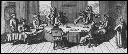
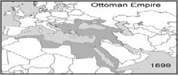

II. MUSTAFA (1664-1703)
“Bana ağırlık ve hazine lazım değil. Yerine göre kuru ekmek yerim. Vücudumu din uğruna harcarım. Sıkıntının her çeşidine sabrederim. Milletime hizmet tamam olmadıkça, seferden dönmem. Elbette sefere bizzat kendim giderim.”
II. Mustafa, 1695 yılında taht’a geçtiğinin üçüncü günü yayınladığı, yapacağı işleri anlatan hatt-ı hümayunda, vezirlerine söylüyordu yukarıdaki sözleri. Ayrıca aynı hatt-ı hümayunda, “Zevk, sefa ve rahatı kendimize haram eylemişizdir.” diyordu.
II. Mustafa, Yirmi İkinci Osmanlı Padişahı’dır. 6 Şubat 1664 tarihinde İstanbul’da doğmuş, Babası IV. Mehmed, annesi Emetullah Rabia Gülnuş Sultan’dır.
Sultan II. Ahmed’in vefatı üzerine, Osmanlı tarihinde ilk defa ve enteresan bir olay gerçekleşti. 31 yaşında olan Şehzade Mustafa, vefatını duyduğu amcasının yerine taht’a çıkmak üzere, hiç kimseye boyun eğmeden, bir bildiri beklemeden, yaşamakta olduğu Edirne Sarayı’ndan çıkıp, taht odasına girdi ve taht’a geçti. Devletin ileri gelenlerini padişah sıfatıyla huzuruna getirtip, onlardan hem biat aldı hem de ülke işlerini müzakereye başladı.
AVUSTURYA SEFERLERİ
II. Mustafa taht’a geçtiği sıralarda Osmanlı Devleti, Avusturya ve Venedik ile savaş içerisindeydi. Bu arada Lehistan ve Rusya ile anlaşmazlıklar vardı. Mustafa, Avusturya üzerine bizzat kendisinin katıldığı üç sefer düzenlemiştir.
Sultan II. Mustafa, birinci Avusturya seferi için bütün hazırlıkları tamamlamış, ordunun başında Macaristan üzerinden Avusturya’yı vurmak hesabını yaparken acı bir sürprizle karşı karşıya kaldı. Yeniçeriler; cülus bahşişi almadıklarını ile sürerek kazan kaldırmışlardı. II. Mustafa düşündü ve yapacağını yaptı. Bu işte sorumluluk, Sürmeli Ali Paşa üzerinde kaldı. Dolaysıyla Sürmeli önce azledildi, arkasından da öldürüldü. Yeniçerinin isyanına, seferin aksamasına sebep olan cülusun bahşişi, hayatını kaybeden Sadrazam’ın terekesinden yeniçeriye ödendi.
Yeniçerinin isyanı bu şekilde halledildikten sonra, muharebe için 30 Haziran 1695 tarihinde ordusuyla yollara düşen Sultan II. Mustafa, bu ilk Avusturya Seferi’nden başarıyla dönmüş ve zaferden dolayı “Gazi” unvanını almıştır.
İkinci Avusturya Seferi, 8 Nisan 1696’da II. Mustafa’nın Davutpaşa ordugâhında kurulan Sultan Otağı’na çıkması ve oradan da Macaristan üzerine yürümesi ile başlamıştır. 27 Ağustos 1696’da Osmanlı ordusu, Avusturya ordusunu yenilgiye uğrattı. 26 Ekim 1696’da II. Mustafa, ordusu ile İstanbul’a döndü.
Çeşitli cephelerde açılan savaşlar, devletin mali düzeninde de birtakım aksaklıklara sebep oluyordu. Kayıplar kısa zaman içinde telafi edilmek istendiğinden, harcamalar birbiri üstüne biniyordu. Bu sıralarda II. Mustafa, tütün içme yasağı koyma yoluna gitmişti. Ancak, gelir getirme vasıtası olarak kullanılmak niyetiyle, bu yasaktan vazgeçildi.
11 Eylül 1697 tarihinde olan üçüncü Avusturya Seferi’nde Osmanlı ordusu büyük bir yenilgiye uğramıştır. Bu arada Venedikliler, Mora ve Dalmaçya’ya; Lehistan ise Boğdan’a saldırdı. Aynı dönemde Rusya’nın başına Deli Petro geçmişti. Deli Petro, ordusunu modernize etmiş, boğazlardan Akdeniz’e inme ve Karadeniz’e egemen olma çabalarına girişmişti. Ayrıca şartlarını da sıralamaya koyulmuştu. Eline geçirdiği toprakları vermeyeceğini beyan ediyor, ele geçiremediği Kerç Kalesi’nin kendisine verilmesini, kabul edilmediği takdirde derhâl Osmanlı Devleti aleyhinde bir ittifak kuracağını bildiriyordu.
KARLOFÇA ANTLAŞMASI

Karlofça Antlaşması müzakereleri
Son Avusturya seferindeki yenilgi tam bir buhran olmuştur. Yeni Sadrazam Hüseyin Paşa’nın girişimleriyle II. Mustafa, antlaşmaya razı olmuştur. 26 Ocak 1699 tarihinde imzalanan Karlofça Antlaşması’yla Banat ve Temeşvar hariç, bütün Macaristan ve Erdel Prensliği Avusturya’ya, Ukrayna ve Podolya Lehistan’a, Mora ve Dalmaçya kıyıları Venediklilere bırakıldı.

Karlofça Antlaşması’ndan sonra Osmanlı sınırları
Karlofça Antlaşması Osmanlı Devleti’nin büyük ölçüde toprak kaybettiği ilk antlaşmadır. Bu antlaşma ile Osmanlı Devleti’nin Gerileme Dönemi başlamıştır.
Osmanlı Devleti’nin kötü gidişatı durdurulamamıştı. II. Mustafa, devlet işlerini sadrazamlarına ve hocası olan Feyzullah Efendi’ye bırakmıştı.
Bu arada Fransa, kendince malum sebeplerden, Osmanlı’daki büyükelçisini geri çekmiş, yerine Feryol adlı bir diplomat yollamıştı. Fransa Kralı’nın hediyelerini sunmak üzere Padişah’ın huzuruna doğru yürürken, Çavuşbaşı, belinde bir kılıç sallandığını fark ederek elçiyi durdurdu. Elçi Feryol, daha önceki elçinin de kılıçla huzura girdiğini -ki bu aslı olmayan bir şeydir- kılıcı alınırsa itibarının da gideceğini söylese de Sadrazam Hüseyin Paşa, bunun mümkün olmadığını söyleyerek, kabul etmedi. Fevri bir çıkışla ısrarına devam eden Feryol, saraydan çıkarak elçiliğe döndü. Ertesi gün de Fransa Kralı’nın hediyeleri, elçiliğe iade edildi. Bu olaydan sonra Feryol, on sene daha elçi olarak görevde kalmıştır ancak, bir kez olsun padişah huzuruna çıkmaya nail olamamıştır.
Padişah’la Edirne’deyken rahatsızlanan Sadrazam Hüseyin Paşa, istifa eder, Padişah, üzüntüyle kabul eder bu istifayı. Yerine, Daltaban Mustafa Paşa getirilir. Sırp asıllı olan Daltaban Mustafa Paşa, İslamiyet’i samimiyetle kabullenmiştir. Kahraman, cesur ve dirayet sahibidir ama ne var ki tahsili yoktu. Daltaban Mustafa Paşa, Sadrazam olduğunda ilk olarak Müslim ve gayrimüslimlerin birbirinden farklı giyinmelerini emretmiş ve bu hususta bir talimat yayınlamıştır. Bu talimata nazaran Hristiyan ve Yahudiler, dinlerinin gereğine aykırı olmayan giyime davet edildi. İslam kadınlarına ise, geniş elbise ve kalın yaşmak kullanmalarını emretti. Bu emre aykırı harekette ısrar eden Venedik elçiliği baş tercümanı, dayakla cezalandırıldı. Daltaban Mustafa Paşa’nın Sadrazam olmasında Şeyhülislam Feyzullah Efendi’nin katkısı olduysa da Paşa’nın yüksek karakteri, esen rüzgâra göre yelken açan cinsten olmadığından, Sadrazam ve Şeyhülislam arasında anlaşmazlıklar meydana geldi. Şeyhülislam, Daltaban Mustafa Paşa’yı azlettirme çalışmalarına girişmişti.
Daltaban Mustafa Paşa, Rus hudutlarına dönük çalışmalar yapmakta, buralarda kuvvetli istihkâmlar kurdurmaktaydı. Rus hududunda birtakım hazırlıklarını yürütürken, Giray Han’dan gelen bir haber, devlet adamlarının heyecanlanmasına yol açtı. Haber şuydu: Ruslar, saldırılabilecek bölgelere kuvvet yığıyordu. Rus elçisi derhâl mülakata davet edildi. Büyükelçi, devletinin asla böyle bir niyet taşımadığını beyan ettikten sonra, Azak Denizi’nde bulunan 12 parça gemisini, Osmanlı Devleti’ne satma teklifi getirdi.
Devlet Giray ise, yapılanın yanlış olduğunu ileri sürerek itirazını büyütüp, isyan mertebesine getirdi. Bu vaziyet karşısında üzerine asker yollanması kararı alındı. Sadrazam’ın konuşmalarından ahali, Avusturya-Rusya üzerine sefer yapılıyor hükmünü çıkarmaktaydı. Şeyhülislam ise Padişah’ı, Veziriazam aleyhine bilgilendirmekte idi. Veziriazam’ın, Padişah’tan farklı politika takip etmek istediğinden, zehirletmek düşüncesinde olduğunu, bu adam sadrazam oldukça, Kırım’ın karışıklıktan kurtulamayacağını ifade ediyor ve şahit olarak da Rami Efendi ile Mavro Kordato Bey’i gösteriyordu. İftira ve şehadet tamamlanınca Daltaban Mustafa Paşa’nın azli gerçekleşti, üç gün sonra da hayatına son verildi.
Ardından, Sadrazam olarak Rami Paşa tayin edildi. Son zamanlarda Gürcistan; Osmanlı devletine ödemekle yükümlü olduğu vergileri veremez olmuştu. Sadrazam, ilk iş olarak bu ülke üzerine asker sevk etti ayrıca da memleketin dâhili işlerini tanzim etmeye koyuldu. Devletin tahsil edemediği gelirleri toplama hususundaki gayreti isabetliydi ancak, askerlik mesleğinden hiç anlamadığı için, askerlerin hazırlamakta olduğu isyanı sezemedi. Gürcistan’a sevk edilen asker, birikmiş maaşlarını istiyordu. Bunların ödeneceği vadedilse de yedi ocak askeri, bu sözleri kale almayarak, Et Meydanı’nda tekbir getirip, dolaşmaya başladılar. İsyancılar, Abdullah Paşa’nın konağı önünde toplandı. İsyanı engellemeye çalışan, Devlet’e sadık Sekbanbaşı ve askerleri, ne hikmetse, Şeyhülislam’ın damadı olan Kadı Seyyid Efendi ile birlikte hapsedildi. Şiddetlerini artıran isyancılar, yeniçeri ağalığına Çalık Ahmed adlı birini seçtiler.
Bu ihtilal sonucu, Şeyhülislam Feyzullah Efendi ve oğullarının derhâl azli, Padişah’ın ise Edirne’den İstanbul’a dönmesini talep eden bir mektup kaleme alındı ve ulemadan beş, yedi ocak askerinden ikişer kişi olmak üzere on dokuz kişilik bir heyet, ültimatom niteliğindeki mektubu, Edirne’de bulunan Padişah’a tebliğ için yola çıkarıldı.
Bu olaylar aşama aşama gerçekleşirken Gülnuş Valide Sultan, hemen oğlunun yanına Edirne Sarayı’na gider. İsyancıların yolda olduğunu ve her an Edirne’ye ulaşacaklarını, bu yüzden Padişah’ın, Şeyhülislam ve oğullarını bir an önce azletmesini ister. Bu tavsiyeye uyan II. Mustafa, onları azletti. İhtilalcilerin, Edirne’ye gelmelerine müsaade edildiğine dair de bir ferman çıkarır. İhtilalciler, Şeyhülislam olarak Bursalı İmam Mehmed Efendi’yi istemektedirler. Padişah bu isteği de gerçekleştirdi.
Ancak, İstanbul’ dönmesi isteklerine karşılık, bir süre daha Edirne’de kalacağını bildirdi. İşte, bütün isteklere bir nevi boyun eğdiği hâlde, Edirne’de kalma kararı, isyancıların hiç hoşuna gitmedi. Edirne’ye yürüyüşe devam etmeye ant içmişler ve Padişah’ı tahtından etmeye karar vermişlerdi.
Öte yandan Rami Paşa, zaten askerlik mantığından hiç anlamadığı için, çok yanlış bir zamanda çok yanlış bir karar vererek, Rumeli ve Anadolu askerinden oluşturduğu 80 bin kişilik bir orduyla, Edirne’ye yürümekte olan ihtilalcilerin üzerine yürüyüşe geçti. Oysa karşıt gibi görünen iki grup, aralarında anlaşmışlardı. Ertesi gün, karşılaştıkları noktada kucaklaştılar. Edirne ordusunun komutanları, kardeş kanı dökmemek için geri çekildiler. Rami Paşa’nın ise bu ittifaktan çok geç haberi olmuştu.
Nihayetinde Edirne’ye giren ihtilalciler, 22 Ağustos 1703 tarihinde II. Mustafa’yı tahttan indirilip yerine III. Ahmed’i çıkarıldı. Feyzullah Efendi’yi de öldürdüler. 29 Aralık 1703 tarihinde de II. Mustafa vefat etti. Cenazesi İstanbul’a getirilip IV. Mehmed’in yanına gömülmüştür.
EŞLERİ
Kadınefendiler;
1- Ali-cenab; Başhaseki
2- Şeh-Süvar Valide Sultan: 4. Haseki
3- Saliha Sebkati Valide Sultan: Cariyelerinden
4- Hüma Şah Haseki
5- Afife Haseki
6- Hatice Haseki
İkballeri;
1- Hanife Hatun: İkinci veya üçüncü ikbaldir.
2- Fatma Şahin Hatun
ERKEK ÇOCUKLARI
1- Şehzade Mahmud
2- Şehzade Mehmed
3- Şehzade Selim
4- Şehzade Murad
5- Şehzade Murad
6- Şehzade Ahmed
7- Şehzade Osman
8- Şehzade Hasan
9- Şehzade Hüseyin
10- Şehzade Ahmed
11- Şehzade Süleyman
KIZ ÇOCUKLARI
1- Emine Sultan
2- Safiyye Sultan
3- İmmetullah Sultan
4- Rukiye, Fatma, Ümmügülsüm, Rukiyye, Zeyneb ve Esma; küçük yaşta ölmüşlerdir.